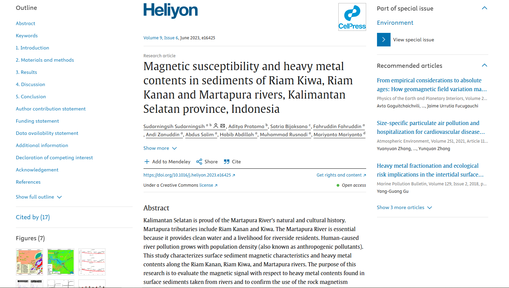
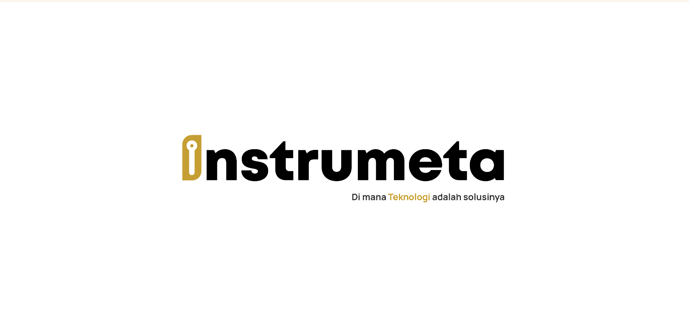
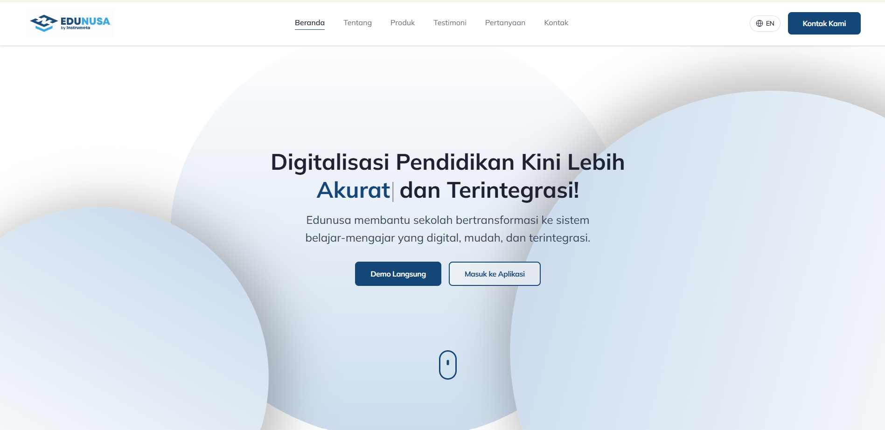

Selected trail
Three quiet doors to things I have sent out into the world.
Publication, company, and project links that grew enough to have their own place.

An academic note published and readable on ScienceDirect.
sciencedirect.com
The digital home for a company I helped shape and maintain.
instrumeta.id
A landing page for an education ecosystem built to feel clear and familiar.
edunusa.co.id